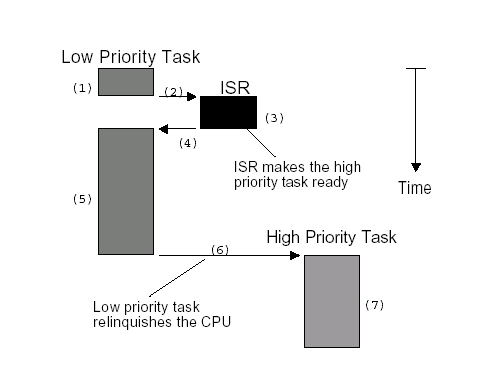
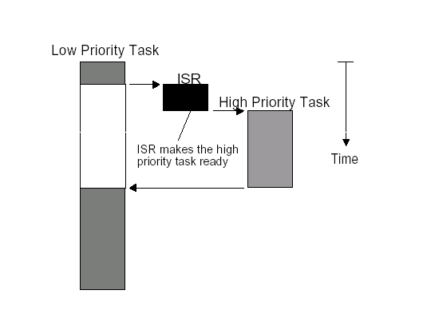

3.3.4.4. 用户抢占和内核抢占
3.3.4.4.1. 非抢占式内核与抢占式内核
3.3.4.4.1.1. 非抢占式内核
非抢占式内核由任务主动放弃CPU使用权
非抢占式调度法也称为合作型多任务,各个任务彼此合作共享一个CPU,异步事件还是由中断服务来处理,中断服务可以使一个高优先级的任务由挂起状态变为就绪状态. 但中断服务以后控制权还是回到原来被中断的那个任务,直到该任务主动放弃CPU使用权,那个高优先级的任务才能获得CPU的使用权，非抢占式内核如下图所示

非抢占式内核的优点
中断响应快(与抢占式内核比较)
允许使用不可重入函数
几乎不需要使用信号量来保护共享数据,运行的任务占有CPU，不必担心被别的任务抢占
非抢占式内核的缺点:
任务响应时间慢,高优先级的任务已经进入就绪态,但还不能运行,要等到当前运行着的任务释放CPU
非抢占式内核的任务响应时间式不确定的
3.3.4.4.1.2. 抢占式内核
使用抢占式内核可以保证系统响应时间，最高优先级的任务一旦就绪，总能得到CPU的使用权，当一个运行着的任务使一个比它优先级高的任务进入就绪态，当前任务的CPU使用权 就会被剥夺，或者说被挂起了
抢占式内核如下图所示

抢占式内核优点：
使用抢占式内核，最高优先级的任务什么时候可以运行，可以得到CPU使用权是可知的.使用抢占式内核使得任务级响应时间得以最优化
不能直接使用不可重入型函数，调用不可重入函数时,要满足互斥条件,这点可以使用互斥型信号量来实现.如果调用不可重入型函数时,低优先级的任务CPU的使用权被高优先级任务剥夺，不可重入型函数中的数据有可能被破坏
3.3.4.4.2. linux用户抢占
一般来说,用户抢占发生在以下几种情况下
从系统调用返回到用户空间
从中断(异常)处理程序返回用户空间
从这里我们看出，用户抢占是发生在用户空间的抢占现象
更详细的触发条件如下
时钟中断处理例程检查当前任务的时间片，当任务的时间片消耗完时,scheduler_tick()函数会设置need_resched标志
信号量，等待队列，completion等机制唤醒时都是基于waitqueue的,而waitqueue的唤醒函数为default_wake_function,其调用try_to_wake_up将被唤醒的任务更改为就绪转台并设置为need_resched标志
设置用户进程的nice值时，可能会使高优先级的任务进入就绪状态
改变任务的优先级时,可能会使高优先级的任务进入就绪状态
新建一个任务时，可能会使高优先级的任务进入就绪状态
对CPU(SMP)进行负载均衡时,当前任务可能需要放到另外一个CPU上运行
3.3.4.4.3. linux内核抢占
如果内核处于相对耗时的操作中，比如文件系统或者内存管理的相关任务,这就造成了系统的延迟增加，让用户感觉卡顿的现象.在编译内核的时候如果启动了对内核抢占的支持，则可以解决这些问题，如果 高优先级的任务需要完成，则不仅用户空间的程序可以被中断内核也可以被中断。
内核抢占和用户层进程被其他进程抢占是两个不同的概念,内核抢占是从实时系统中引入的，在非实时系统中的确也能提高系统的响应速度,但也不是在所有情况下都是最优的,因为抢占也需要调度和同步的开销。 在某些时候甚至关闭内核抢占，比如主调度器在完成调度的时候.内核也不是在任意点都可以被中断的
要满足什么条件，kernel才可以抢占一个任务的内核态呢
没有锁，锁是用于保护临界区,不能被抢占
kernel code可重入,因为kernel是SMP-safe的，所以满足可重入性
内核抢占发生的时机，一般发生在
当一个中断例程退出，在返回内核态时,这时隐式的调用schedule(函数,当前任务没有主动放弃CPU使用权,而是被剥夺了了CPU使用权
内核中的任务显示的调用schedule()任务主动放弃CPU使用权
内核抢占并不是在任何一个地方都可以发生
内核正在进行中断处理,在linux内核中进程不能抢占中断(中断只能被其他中断中止，抢占).在中断例程中不允许进行进程调度,进程调度函数schedule()会对此做出判断，如果在中断中调用会打印出错信息
内核正在进行中断上下文的Bottom half(中断下半部)处理
内核代码正持有spinlock自旋锁 rwlock读写锁
内核正在执行调度程序scheduler
内核正在对每个CPU私有数据结构操作
3.3.4.4.4. 内核抢占的实现
系统中每个进程都有一个特定于体系结构的struct thread_info结构,用户层程序被调度的时候会检查struct thread_info中need_resched标识是否需要被重新调度
内核抢占抢占也可以用同样的方法实现linux内核在thread_info结构中加入了一个自旋锁标识preempt_count称为抢占计数器(preemption counter)
/*
* low level task data that entry.S needs immediate access to.
*/
struct thread_info {
unsigned long flags; /* low level flags */
mm_segment_t addr_limit; /* address limit */
#ifdef CONFIG_ARM64_SW_TTBR0_PAN
u64 ttbr0; /* saved TTBR0_EL1 */
#endif
union {
u64 preempt_count; /* 0 => preemptible, <0 => bug */
struct {
#ifdef CONFIG_CPU_BIG_ENDIAN
u32 need_resched;
u32 count;
#else
u32 count;
u32 need_resched;
#endif
} preempt;
};
};
内核提供了一些函数或者宏去开启关闭以及检测preempt_count的值
#define PREEMPT_ENABLED (0)
static __always_inline int preempt_count(void)
{
return READ_ONCE(current_thread_info()->preempt_count);
}
static __always_inline volatile int *preempt_count_ptr(void)
{
return ¤t_thread_info()->preempt_count;
}
static __always_inline void preempt_count_set(int pc)
{
*preempt_count_ptr() = pc;
}
/*
* must be macros to avoid header recursion hell
*/
#define init_task_preempt_count(p) do { \
task_thread_info(p)->preempt_count = FORK_PREEMPT_COUNT; \
} while (0)
#define init_idle_preempt_count(p, cpu) do { \
task_thread_info(p)->preempt_count = PREEMPT_ENABLED; \
} while (0)
还有其他函数用于开启和关闭内核抢占
#define preempt_enable() \
do { \
barrier(); \
if (unlikely(preempt_count_dec_and_test())) \
__preempt_schedule(); \
} while (0)
#define preempt_enable_notrace() \
do { \
barrier(); \
if (unlikely(__preempt_count_dec_and_test())) \
__preempt_schedule_notrace(); \
} while (0)
#define preempt_check_resched() \
do { \
if (should_resched(0)) \
__preempt_schedule(); \
} while (0)
#define preempt_disable() \
do { \
preempt_count_inc(); \
barrier(); \
} while (0)
#define sched_preempt_enable_no_resched() \
do { \
barrier(); \
preempt_count_dec(); \
} while (0)
#define preempt_enable_no_resched() sched_preempt_enable_no_resched()
#define preemptible() (preempt_count() == 0 && !irqs_disabled())
重新启用内核抢占时使用preempt_schedule检查抢占
在内核停用抢占后重新启用时,检测是否有进程打算抢占当前执行的内核代码
抢占机制中主要的函数是preempt_schedule，设置了TIF_NEED_RESCHED标志并不能保证可以抢占内核,内核可能处于临界区
asmlinkage __visible void __sched notrace preempt_schedule(void)
{
/*
* If there is a non-zero preempt_count or interrupts are disabled,
* we do not want to preempt the current task. Just return..
*/
//#define preemptible() (preempt_count() == 0 && !irqs_disabled())
//如果抢占计数器大于0，那么抢占被停用，函数返回
//如果内核停用了硬件中断,以保证一次性完成相关操作,那么此时抢占也是不可以的
if (likely(!preemptible()))
return;
preempt_schedule_common();
}
static void __sched notrace preempt_schedule_common(void)
{
do {
preempt_disable_notrace(); //抢占计数器加1
preempt_latency_start(1);
__schedule(true); //完成一次调度,参数preempt=true表明调度不是以普通的方法引发的
preempt_latency_stop(1);
preempt_enable_no_resched_notrace(); //抢占计数器减一
/*
* Check again in case we missed a preemption opportunity
* between schedule and now.
*/
} while (need_resched());
}
中断之后返回内核态时通过preempt_schedule_irq触发
上面preempt_schedule只是触发内核抢占的一种办法,另一种激活抢占的是在处理了一个硬件中断请求之后,如果处理器在处理中断请求后返回内核态(返回用户态则没有影响),特定体系结构的 汇编例程会检查抢占计数器是否为0,即是否允许抢占,以及是否设置了重新调度标识
preempt_schedule_irq与preempt_schedule的本质区别在于preempt_schedule_irq调用时停用了中断，防止中断造成的递归调用
asmlinkage __visible void __sched preempt_schedule_irq(void)
{
enum ctx_state prev_state;
/* Catch callers which need to be fixed */
BUG_ON(preempt_count() || !irqs_disabled());
prev_state = exception_enter();
do {
preempt_disable();
local_irq_enable();
__schedule(true);
local_irq_disable();
sched_preempt_enable_no_resched();
} while (need_resched());
exception_exit(prev_state);
}